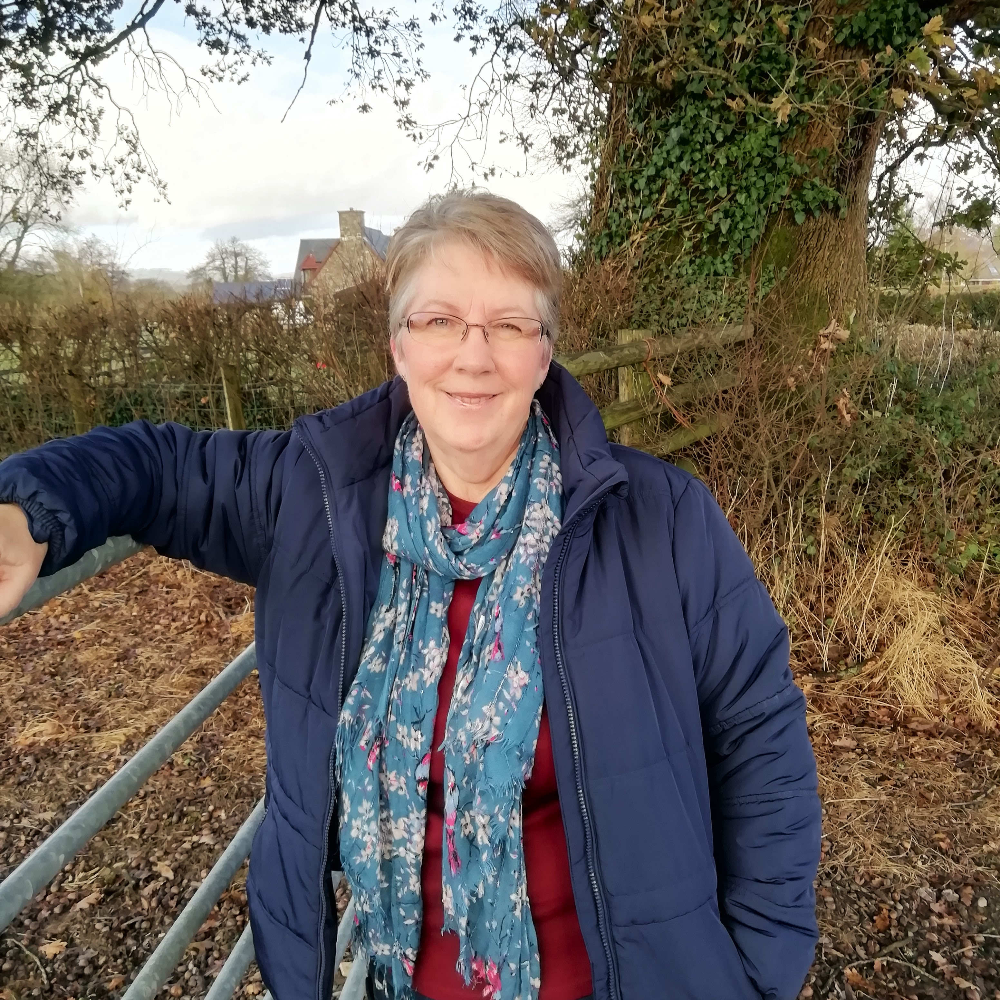

Always a ‘sickly child’ I learned to live with frequent high fevers, endless courses of antibiotics, multiple hospital admissions and investigations, only to be sent home without a diagnosis.
As I got older my health problems increased. Every winter I would succumb to flu which would turn into bronchitis. All summer long I suffered with hay fever and was always the favourite snack for every biting insect. I also had ongoing digestive issues. By the age of 26 I’d had several hospital admissions with ‘appendicitis’ but it was finally decided I probably had IBS.
read more...
In the years that followed my health continued its downward spiral. Whatever my symptoms I never got a definitive diagnosis. I developed severe migraine, asthma and the low backache that had plagued me for years upgraded into a prolapsed disc. I was taking six medications every day.
I was finally diagnosed with arthritis of the neck and lower back. Looking at the MRI scan of my neck my doctor cheerfully told me that I had the ‘neck of a 90 year old’ and that the only solution was stronger pain relief. The relief however was short lived when I developed a severe allergy to the drugs I was given and told they were no longer an option. Everyone at my GP surgery knew me; I felt like a hypochondriac. I was 53 and no longer able to work….
Today, still with no health problems, it’s hard to remember how desperate I felt on that awful day in December 2008 when I left my job as a teacher.
I had always been very aware of an energy field within myself and of my energetic connection to the natural world and had begun to use energy therapy years earlier. Although it had helped a great deal, it didn’t cure me. There was something missing.
It was signing up for a web design course at the local college (to keep me sane!) that surprisingly provided the answer. Whilst researching websites I came across a training course in nutrition and signed up. Within weeks of starting the course I saw definite improvements in my health and it wasn’t long before I was feeling very much better. The good news continued as gradually every health complaint vanished. Two years later a follow up MRI showed no sign of arthritis!
You may wonder what massive changes I had to make in my life to achieve this. The answer was actually incredibly simple…I was gluten intolerant!
Despite everything I’d been through no doctor had even considered the possibility that a simple dietary change could restore my health. Have I re-introduced gluten so that I can be tested for Celiac Disease? – No! I have all the proof I need.
My daughter has since discovered that she is gluten intolerant and her children have been diagnosed with Non Celiac Gluten Sensitivity. One was having unusual health problems which resolved completely on a gluten free diet.
My discovery changed not only my life and that of my family but I continue to witness the improvement in health experienced by my clients, which is why I’m so passionate about the work I do.
My personal philosophy of healing has evolved over many years as I’ve studied, practiced, and researched, yet it remains simple. I believe without reservation that the human system works tirelessly to heal itself, always striving to return to a state of harmony.
The human system, like the natural world around us relies on rhythms and cycles. A chaotic body is a sick body and restoring balance is an important part of regaining health. Like traffic jams in towns and cities, mental, emotional, or physical stagnation restricts us allowing disease to take hold. Removing blockages allows life to flow freely and effortlessly.
Medical systems are set up to fight disease, not prevent it.
read more...
When we become ill it’s easy to blame doctors for not being able to ‘fix’ our problems, but they are taught one method which is to diagnose a disease and choose a medication to suppress it or undertake surgery to repair or remove damaged tissues.
Medication and surgery don’t change the circumstances that led to the disease developing in the first place. Understanding how disease develops removes the fear which is a barrier to progress. The reversal of disease begins with active engagement in learning how we can restore our health rather than expecting others to do it for us.
Unlocking the body’s own innate healing ability and providing the materials it needs for repair, is the only way to achieve lasting health. Experience has shown me that the intention to heal combined with good nutrition and energy based therapies can unlock that potential and I feel privileged to work with patients who are ready to embrace change so that healing can begin.